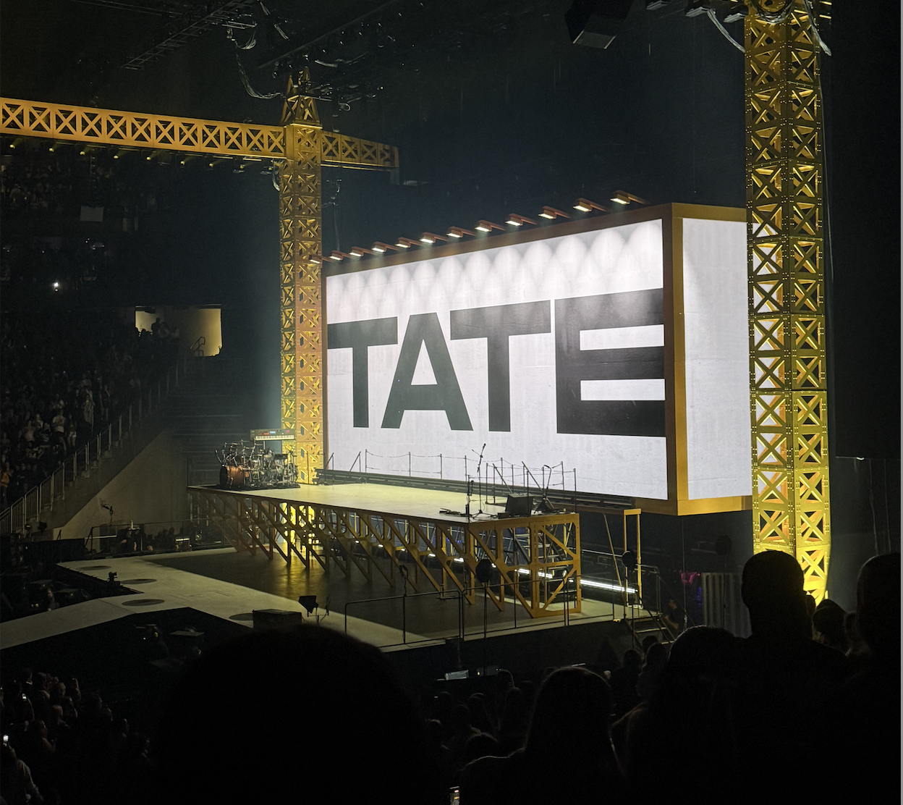

How It Starts
Tate started the concert with her hits Miss Possessive and 2 Hands. The lights, fake fog, and fire with screen effects made the show look exciting. She danced and sang with lots of energy. Her voice sounded great live.
Tate started the concert with her hits Miss Possessive and 2 Hands. The lights, fake fog, and fire with screen effects made the show look exciting. She danced and sang with lots of energy. Her voice sounded great live.